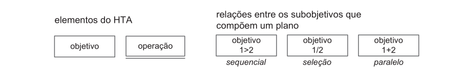
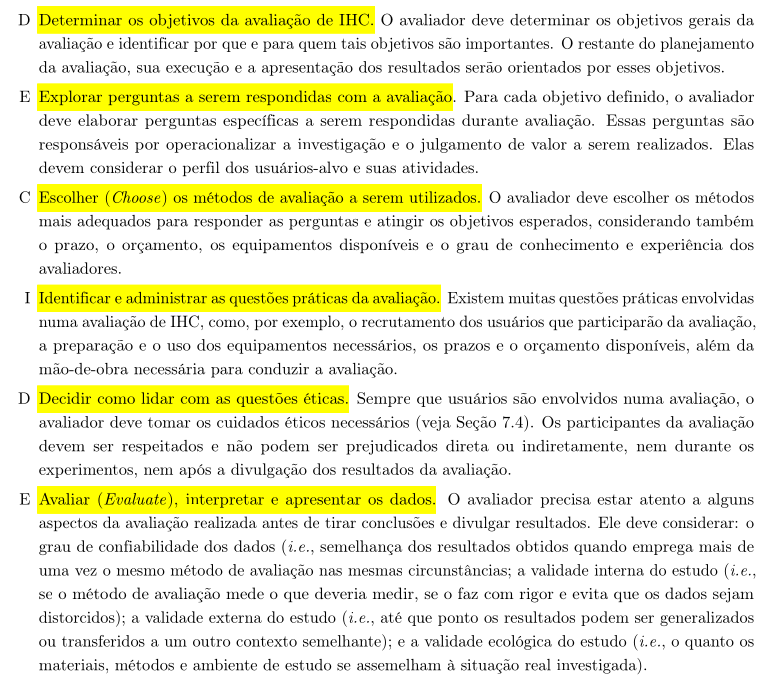
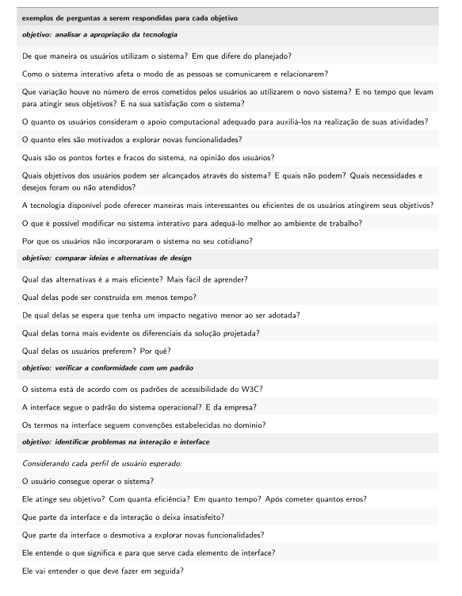
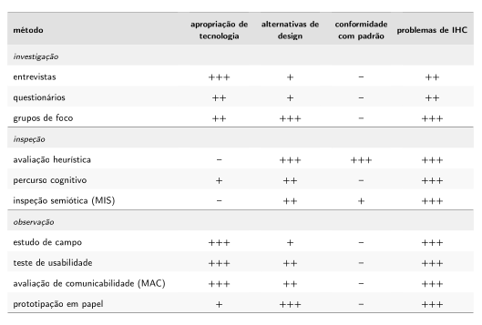
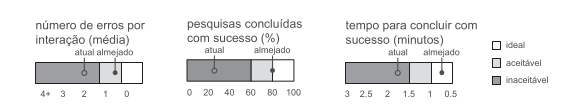
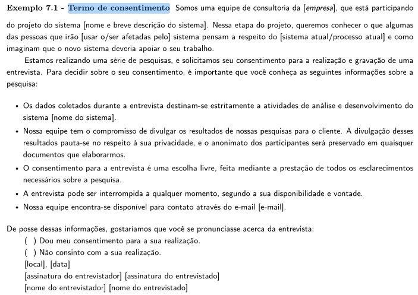
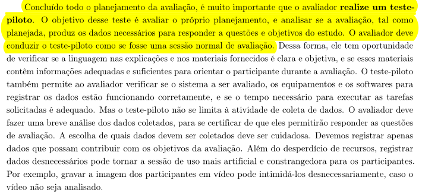

Planejamento da Avaliação da Análise de Tarefas
Grupo 02
Tabela de Contribuição
| Integrante | Contribuição |
|---|---|
| Tiago | Criação do documento |
| Lucas | Adição das imagens |
Tabela 1: Tabela de contribuição (Fonte: SOUSA, Tiago).
Introdução
A análise de tarefas é um instrumento fundamental no processo de design centrado no usuário. Segundo Barbosa et al. (2021, p. 177), ela é utilizada para compreender qual é o trabalho dos usuários, como eles o realizam e por quê, definindo esse trabalho em termos dos objetivos que os usuários querem ou precisam atingir. Em IHC, a análise de tarefas pode ser aplicada para examinar a situação atual, apoiar o redesign de um sistema ou avaliar o resultado de uma intervenção que inclua a introdução de um novo sistema computacional.¹
Este documento tem por objetivo planejar a avaliação da análise de tarefas produzida pelo Grupo 02, detalhando de forma estruturada os objetivos da avaliação, as perguntas norteadoras, o método adotado, os critérios de seleção de participantes, o cronograma, as questões éticas envolvidas e a realização de um teste piloto. Todo o planejamento é conduzido com base no Framework DECIDE (Preece et al., 2002), que orienta de forma iterativa e interligada todas as dimensões do planejamento de uma avaliação de IHC.
Planejamento da Avaliação
O Framework DECIDE
O Framework DECIDE foi proposto por Preece et al. (2002) para orientar o planejamento, a execução e a análise de avaliações de IHC. Suas atividades são interligadas e executadas de forma iterativa: quando o avaliador identifica a necessidade de ajustar os rumos da avaliação, as demais atividades são afetadas em cadeia (BARBOSA et al., 2021, p. 279–280).²
| Letra | Etapa | Descrição |
|---|---|---|
| D | Determinar os objetivos | Definir os objetivos gerais da avaliação e identificar por que e para quem tais objetivos são importantes. |
| E | Explorar as perguntas | Elaborar perguntas específicas a serem respondidas durante a avaliação, operacionalizando a investigação. |
| C | Escolher os métodos | Selecionar os métodos mais adequados para responder às perguntas e atingir os objetivos, considerando prazo, orçamento e recursos disponíveis. |
| I | Identificar questões práticas | Administrar aspectos práticos como recrutamento de participantes, equipamentos, prazos e orçamento. |
| D | Decidir sobre questões éticas | Garantir que os participantes sejam respeitados e não sejam prejudicados direta ou indiretamente. |
| E | Avaliar os dados | Interpretar e apresentar os dados com atenção à confiabilidade, validade interna, validade externa e validade ecológica. |
Tabela 2: Etapas do Framework DECIDE (Fonte: adaptado de BARBOSA et al., 2021, p. 280).
D — Determinar os Objetivos da Avaliação
A questão fundamental de qualquer avaliação de IHC é definir quais são seus objetivos, a quem eles interessam e por quê. Os objetivos determinam quais aspectos relacionados ao uso do sistema devem ser investigados (BARBOSA et al., 2021, p. 264). Para esta avaliação da análise de tarefas, os objetivos gerais são:
- Verificar a apropriação da tecnologia pelos usuários — avaliar se as tarefas modeladas refletem adequadamente como os usuários reais realizam suas atividades, suas necessidades e seus objetivos ao interagir com o sistema.
- Identificar problemas na interação e na interface — detectar inconsistências, lacunas ou representações inadequadas no modelo de tarefas que possam comprometer a qualidade da solução de IHC projetada.
- Verificar a conformidade com padrões — avaliar se a análise de tarefas segue as convenções e os métodos estabelecidos, garantindo coerência e alinhamento com o contexto de uso.
Esses objetivos são relevantes para a equipe de design pois, ao validar a análise de tarefas com usuários reais, é possível identificar precocemente falhas de modelagem antes que estas se propaguem para etapas mais custosas do processo de design.³
E — Explorar as Perguntas a Serem Respondidas
Para cada objetivo definido, foram elaboradas perguntas específicas que operacionalizam a investigação durante a avaliação com os participantes. Essas perguntas devem considerar o perfil dos usuários-alvo e suas atividades (BARBOSA et al., 2021, p. 280):
| Objetivo | Pergunta | Tipo de Resposta |
|---|---|---|
| Apropriação da tecnologia | Os objetivos das tarefas modeladas correspondem aos objetivos reais dos usuários ao utilizar o sistema? | Sim / Não |
| Apropriação da tecnologia | As operações descritas na análise de tarefas são compatíveis com a forma como os usuários realizam suas atividades na prática? | Sim / Não |
| Apropriação da tecnologia | O modelo de tarefas reflete adequadamente o contexto em que os usuários realizam suas atividades? | Sim / Não |
| Identificação de problemas | A sequência das ações no modelo segue uma lógica clara e coerente com o fluxo real de uso? | Sim / Não |
| Identificação de problemas | O nível de decomposição das tarefas é adequado para representar a complexidade das interações? | Sim / Não |
| Identificação de problemas | O modelo identifica corretamente as decisões e alternativas que o usuário pode enfrentar durante a tarefa? | Sim / Não |
| Identificação de problemas | O modelo de tarefas apresenta alguma falha grave na estruturação das atividades? | Sim / Não |
| Conformidade com padrões | A análise de tarefas está de acordo com o método utilizado (HTA, GOMS ou CTT), sem inconsistências estruturais? | Sim / Não |
| Conformidade com padrões | Os elementos visuais e simbólicos do modelo seguem as convenções do método adotado? | Sim / Não |
| Geral | Você teria alguma sugestão de melhoria para as tarefas modeladas? | Aberta |
Tabela 3: Roteiro de perguntas da avaliação (Fonte: SOUSA, Tiago).
C — Escolher os Métodos de Avaliação
O método de avaliação selecionado é a entrevista semiestruturada. A escolha se deve à capacidade desse método de extrair percepções aprofundadas e detalhadas diretamente dos participantes, permitindo ao entrevistador explorar respostas inesperadas e aprofundar tópicos relevantes que surjam durante a conversa. Segundo Barbosa et al. (2021, p. 280), o avaliador deve escolher os métodos mais adequados para responder às perguntas e atingir os objetivos esperados, levando em conta prazo, orçamento, equipamentos disponíveis e o grau de conhecimento dos avaliadores.
A entrevista é especialmente adequada para a avaliação da análise de tarefas, pois permite verificar se o modelo elaborado pela equipe corresponde à realidade dos usuários — algo que métodos sem participação direta dos usuários não conseguem capturar. As entrevistas serão conduzidas com base no roteiro da seção anterior, sendo apresentado ao participante o modelo de tarefas para que ele possa comentar sobre sua clareza, correção e completude.⁴
I — Identificar e Administrar as Questões Práticas da Avaliação
Metas de Usabilidade
A definição das metas de usabilidade envolve determinar os fatores de qualidade de uso que devem ser priorizados no projeto, como serão avaliados ao longo do processo de design e quais faixas de valores são inaceitáveis, aceitáveis e ideais para cada indicador (BARBOSA et al., 2021, p. 117).
Para esta avaliação da análise de tarefas, as metas de usabilidade priorizadas são:
- Facilidade de aprendizado: os modelos de tarefas devem ser compreensíveis por usuários sem formação técnica em IHC, de modo que os participantes consigam interpretar o fluxo representado sem necessidade de explicações extensas.
- Eficácia: as tarefas modeladas devem representar com precisão os caminhos que levam o usuário a atingir seus objetivos, sem omissões ou desvios que comprometam a completude da análise.
A razão para a seleção dessas metas é o estágio atual do projeto: a análise de tarefas é um artefato de modelagem que serve de base para decisões de design subsequentes. Falhas de compreensão ou de cobertura das tarefas nesta fase podem impactar toda a cadeia de design, tornando crítico validá-las com representantes reais do público-alvo antes de avançar.⁵
Perfil dos Participantes e Recrutamento
Os participantes serão selecionados com base no Perfil de Usuario definido durante a análise de requisitos do projeto, priorizando indivíduos que representem o público-alvo do sistema. Serão recrutados 3 participantes para as sessões de avaliação, pois, segundo Krug (apud BARBOSA et al., 2021), é possível identificar a maior parte dos problemas com três ou quatro participantes.
O perfil considerado é composto por pessoas na faixa etária compatível com os usuários do sistema, que realizem as atividades representadas nas tarefas modeladas no seu cotidiano. O avaliador deve evitar selecionar conhecidos próximos ou pessoas com quem possua relação que possa influenciar os dados coletados (BARBOSA et al., 2021, p. 277).
Equipamentos Necessários
- Dispositivo para gravação de áudio (com consentimento do participante);
- Modelo de tarefas impresso ou exibido em tela para apresentação ao participante;
- Roteiro de perguntas impresso para o entrevistador;
- Termo de Consentimento Livre e Esclarecido (TCLE) em duas vias.
Cronograma Planejado
| Entrevistador(es) | Entrevistado(s) | Horário de Início | Horário de Fim | Data | Local |
|---|---|---|---|---|---|
| Tiago, Lucas e Samuel | a definir | 12:00 | 12:20 | 21/05/2026 | Presencial |
| Guilherme, Maria Luana | a definir | 12:20 | 12:40 | 21/05/2026 | Presencial |
| Luan e Bryan | a definir | 12:40 | 13:00 | 21/05/2026 | Presencial |
Tabela 4: Cronograma das entrevistas (Fonte: SOUSA, Tiago).
D — Decidir como Lidar com as Questões Éticas
Sempre que usuários são envolvidos numa avaliação, o avaliador deve tomar os cuidados éticos necessários. Os participantes devem ser respeitados e não podem ser prejudicados direta ou indiretamente, nem durante os experimentos, nem após a divulgação dos resultados (BARBOSA et al., 2021, p. 280). Com base nos princípios da Resolução Nº 466/2012 do Conselho Nacional de Saúde e nas diretrizes de IHC (BARBOSA et al., 2021, p. 140–142), esta avaliação adotará as seguintes medidas:
- Consentimento informado: todos os participantes assinarão o Termo de Consentimento Livre e Esclarecido (TCLE) antes do início da sessão. O termo será apresentado em duas vias — uma para o participante e uma para o pesquisador responsável. Caso o participante tenha menos de 18 anos, o termo deverá ser assinado por seu responsável legal.
- Transparência: os objetivos da avaliação, os procedimentos a serem realizados, o tempo estimado e o uso que será feito das informações coletadas serão explicados ao participante antes do início da entrevista. Qualquer dúvida será prontamente esclarecida.
- Anonimato e confidencialidade: os dados brutos serão acessíveis apenas aos membros da equipe de avaliação. Os resultados divulgados não conterão informações que identifiquem os participantes. Nomes fictícios ou identificadores numéricos serão utilizados nos relatos.
- Direito de retirada: os participantes têm o direito de retirar seu consentimento e abandonar a avaliação em qualquer momento, sem qualquer penalização ou consequência negativa.
- Gravação: qualquer gravação de voz ou imagem será realizada somente mediante autorização explícita do participante, registrada no TCLE.⁶
E — Avaliar, Interpretar e Apresentar os Dados
Após a realização das entrevistas, os dados coletados serão analisados levando em conta os seguintes aspectos (BARBOSA et al., 2021, p. 280):
- Confiabilidade: verificar a consistência dos resultados entre os diferentes participantes, distinguindo padrões recorrentes de idiossincrasias individuais por meio de análise interparticipante.
- Validade interna: assegurar que o método empregado avalia efetivamente o que se propõe a medir, evitando distorções nos dados coletados.
- Validade externa: considerar em que medida os resultados podem ser generalizados ou transferidos a outros contextos semelhantes.
- Validade ecológica: avaliar o quanto os materiais, métodos e ambiente da avaliação se assemelham à situação real de uso do sistema.
Os resultados consolidados serão apresentados em relatório contendo: os objetivos e escopo da avaliação; o método empregado; o perfil dos participantes; um sumário dos dados coletados (incluindo respostas ao roteiro); a interpretação e análise dos dados; e uma lista de problemas ou inconsistências identificadas na análise de tarefas, com sugestões de melhoria.
Teste Piloto
Antes da realização das entrevistas principais, será conduzido um teste piloto. O objetivo desse teste é avaliar o próprio planejamento e verificar se a avaliação, tal como planejada, produzirá os dados necessários para responder às questões e aos objetivos do estudo. O avaliador deve conduzir o teste piloto como se fosse uma sessão normal de avaliação (BARBOSA et al., 2021, p. 276).⁷
Durante o teste piloto, serão verificados:
- A clareza e objetividade da linguagem utilizada nas instruções e no roteiro de perguntas;
- A adequação do modelo de tarefas apresentado ao participante (formato, legibilidade);
- O tempo necessário para a condução da entrevista;
- O correto funcionamento dos equipamentos de gravação.
Os dados coletados no teste piloto serão descartados, pois podem estar contaminados por ajustes realizados durante o próprio piloto. Caso problemas sejam detectados, o planejamento e os materiais serão corrigidos antes das entrevistas definitivas. Se necessário, outros testes piloto poderão ser conduzidos até que tudo esteja adequado (BARBOSA et al., 2021, p. 277).
Cronograma do Teste Piloto
| Avaliador(es) | Participante | Horário de Início | Horário de Fim | Data | Local |
|---|---|---|---|---|---|
| Tiago | Bryan | 11:30 | 11:50 | 21/05/2026 | Presencial |
Tabela 5: Cronograma do teste piloto (Fonte: SOUSA, Tiago).
Gravação do Teste Piloto
🎥 [Inserir aqui o link para o vídeo de gravação do teste piloto]
Checklist de Verificação
A tabela abaixo apresenta as questões de verificação aplicadas a este documento, confirmando que todos os itens obrigatórios foram atendidos:
| Item | Questão de Verificação | Atendido? |
|---|---|---|
| 2 | O planejamento da avaliação segue o Framework DECIDE? | ✅ Sim |
| 3 | Descreve o(s) objetivo(s) da avaliação? | ✅ Sim |
| 4 | Os métodos de avaliação a serem utilizados? | ✅ Sim |
| 5 | As questões práticas da avaliação (recrutamento, equipamentos, prazos, orçamento)? | ✅ Sim |
| 6 | As questões éticas (respeito aos participantes, termos de consentimento)? | ✅ Sim |
| 8 | Um cronograma (data e horário) e local para realização da avaliação? | ✅ Sim |
| 11 | A definição do teste piloto e data para realização do teste piloto antes da avaliação? | ✅ Sim |
| 13* | As metas de usabilidade que devem ser alcançadas no projeto ou os objetivos de uma avaliação de IHC? | ✅ Sim |
| 14 | A razão da seleção das metas de usabilidade? | ✅ Sim |
Tabela 6: Checklist de verificação do artefato (Fonte: SOUSA, Tiago).
Bibliografia
BARBOSA, Simone et al. Interação Humano-Computador e Experiência do Usuário. Autopublicação — Leanpub, 2021.
BRASIL. Conselho Nacional de Saúde. Resolução Nº 466, de 12 de dezembro de 2012. Disponível em: https://conselho.saude.gov.br/resolucoes/2012/Reso466.pdf. Acesso em: DD mês 2026.
Histórico de Versão
| Data | Versão | Descrição | Autor(es) | Revisor(es) |
|---|---|---|---|---|
| 18/05/2026 | 1.0 | Criação do documento | Tiago | Luvas |
| 19/05/2026 | 1.1 | Adição das imagens | Lucas | Tiago |
| 23/05/2026 | 1.2 | Padronização do artefato | Tiago | Guilherme |
| 23/05/2026 | 1.3 | Criando anexo para imagens | Guilherme | Maria Luana |
Tabela 7: Histórico de Versão (Fonte: SOUSA, Tiago).
Agradecimentos
Agradecemos à IA Generativa Claude (Anthropic) pelo suporte na elaboração deste documento. A ferramenta foi utilizada para auxiliar na estruturação do conteúdo segundo o Framework DECIDE, na formatação das tabelas, na organização das seções e na revisão da redação. Todo o conteúdo técnico e as decisões de projeto foram definidos pelos integrantes da equipe; o Claude atuou como assistente de formatação e redação, sem interferir nas escolhas metodológicas do grupo.
Anexos
Figura 1 — Elementos de um diagrama HTA

Fonte: BARBOSA et al. (2021, p. 179).Figura 2 — Framework DECIDE

Fonte: BARBOSA et al. (2021, p. 280).Figura 3 — Exemplos de perguntas em avaliações de IHC

Fonte: BARBOSA et al. (2021, p. 266).
Figura 4 — Comparação dos métodos de avaliação

Fonte: BARBOSA et al. (2021, p. 320).Figura 5 — Faixas de valores para indicadores de usabilidade

Fonte: BARBOSA et al. (2021, p. 117).Figura 6 — Exemplo de Termo de Consentimento Livre e Esclarecido

Fonte: BARBOSA et al. (2021, p. 142).Figura 7 — Exemplo de Teste Piloto

Fonte: BARBOSA et al. (2021, p. 276).